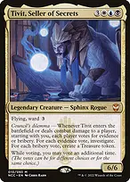
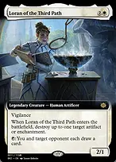
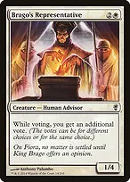
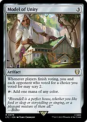
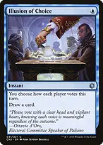
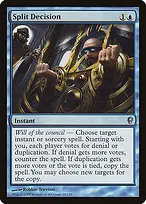
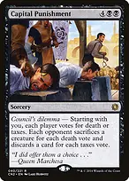
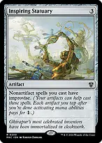
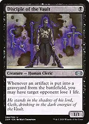
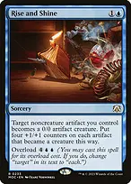

Expand all Collapse all An extra vote is leverage, not a guaranteed majority. At a four-player table Tivit normally gives you two votes against three opposing votes. Build alliances to resolve the useful outcome, then turn the resulting artifacts into a decisive combat or drain finish. Turn negotiation into resources Tivit, Seller of SecretsEach entry or combat-damage trigger normally produces five total Clues and Treasures at a four-player table. Your two votes guarantee two of the artifact type you need, but opponents choose the other three. Ward protects against opposing targeted effects, not sweepers or sacrifice. Master of CeremoniesEach opponent chooses a resource during your upkeep; you receive a matching benefit for all three choices. This is a choice effect, not a vote, so Tivit grants no extra choice. Loran of the Third PathRemove a threatening artifact or enchantment on entry, then bargain with the shared-draw activation. Give the card to someone who can help answer the leader rather than someone threatening a combo. +Tataru Taru + Loran of the Third PathOn your turn, Loran drawing an opponent a card can produce a tapped Treasure. Tataru triggers only once each turn and only when that opponent draws outside their own turn. +Gleaming Splendor + Faerie MastermindMaking an opponent draw their second card that turn gives you a Treasure and a card. Count draws per turn, not per round; one off-turn draw alone does not meet the second-card condition. Wedding RingChoose a player with reliable on-turn draw. Their on-turn draws feed you and your on-turn draws feed them. The copied draw happens off turn, so the Rings do not bounce the same draw back and forth indefinitely. Pendant of ProsperityGive it to a player who needs land drops and agrees to use it. Its controller pays for an activation, but both they and you draw and may put a land onto the battlefield. They can refuse to activate; this is not guaranteed ramp. Wishclaw TalismanTutor on your turn, then hand it to a player whose next tutor is least dangerous. Offer to find a shared answer in exchange for returning it later. Agreements are social, not rules-enforced. Breena, the DemagogueReward attacks against a higher-life opponent with cards while you place counters. Put those counters on Tivit for a shorter commander-damage clock or on Marionette Master for larger artifact-death triggers. Duelist's HeritageGive an ally's attacker double strike to speed up pressure elsewhere. On Tivit, two player-damage steps mean two voting triggers if he connects in both. Orzhov AdvokistOffer counters on your upkeep in exchange for that player's creatures being unable to attack you or your planeswalkers until your next turn. Declining the offer leaves them free to attack; accepting does not stop their spells. Shadrix SilverquillTake the most useful combat-start benefit yourself and give a different player the least dangerous alternative. A player with no creatures can receive the counter mode harmlessly; choices must target different players. Do not give a vulnerable opponent a resource they can immediately use to win. The deck is political because it offers targeted bargains, not because every opponent should receive an equal gift. Use the votes precisely +Brago's Representative + Tivit, Seller of SecretsTogether you normally cast three votes and opponents cast three, producing six artifacts per Tivit trigger. That can secure favorable ties but still does not force a strict majority against united opponents. Model of UnityA fixing rock that rewards players who vote with you with scry 2. Voting for both Tivit choices lets every opponent qualify, which can be an explicit incentive rather than an accident. Council's JudgmentRemoves opposing nonland permanents without targeting, including protected threats. Every permanent tied for the highest number of votes is exiled; coordinate votes before resolution. +Illusion of Choice + Council's JudgmentChoose all votes that turn and distribute them among distinct threats. With five votes and five different eligible permanents, one vote each exiles all five. Resolve Illusion before Judgment, not after voting has begun. Split DecisionA negotiation-based answer or spell copy. Denial requires more votes; a tie copies instead. Do not rely on it as your only counter when copying a game-winning opposing spell would still let the original resolve. +Illusion of Choice + Split DecisionControl all votes to force the counter or copy outcome. This costs three mana and two cards, with Illusion replacing itself; reserve it for a consequential spell. Capital PunishmentEvery vote adds an effect against each opponent while sparing you. With Tivit, two death votes and three taxes votes mean each opponent sacrifices two creatures and discards three cards, if able. Players choose their own sacrifices and discards. Magister of WorthNegotiate either a creature reset or shared graveyard recovery. Ties destroy all other creatures, including Tivit and your engines. Do not casually blink it when the table's graveyards are stronger than yours. Promise of LoyaltyRetain your most valuable creature and force each opponent down to one creature that cannot attack you or your planeswalkers while it retains its vow counter. It sacrifices your other creatures too, and blinking a survivor removes its vow counter. Build an artifact economy Smothering TitheMakes opponents choose between spending mana and feeding your finishers. Shared draw is especially useful when they cannot pay; its mana and artifact production justify a Game Changer slot. Lotho, Corrupt ShirriffPays you for each player's second spell each turn, including your own. Track the life loss and the opportunity to make a Treasure on multiple turns. +Academy Manufactor + Tivit, Seller of SecretsEach Clue or Treasure creation becomes one Clue, one Food, and one Treasure. A normal five-vote trigger therefore creates fifteen artifacts, regardless of the vote split. Mondrak, Glory DominusDoubles those artifact tokens. Spend spare artifacts and life to add an indestructible counter before a destroy effect when safe, but exile and toughness reduction still answer him. Elspeth, Storm SlayerAnother token doubler that also removes a large creature or gives an animated artifact army counters and flying. Her zero ability only affects creatures already present when it resolves. Inspiring StatuaryTap Clues and Food to pay generic costs of nonartifact spells without sacrificing them. This helps cast Tivit, interaction, and overloaded Rise and Shine; it does not discount Cyberdrive Awakener because that is an artifact spell. +Ephemerate + Tivit, Seller of SecretsA one-mana blink protects against targeted removal and makes another voting trigger, then rebound can repeat next upkeep. Blinking Tivit removes his counters and resets summoning sickness. +Displacer Kitten + Tivit, Seller of SecretsEvery noncreature spell can blink Tivit for another vote. The new artifacts help fund subsequent spells, but the sequence requires additional cards and is not an infinite loop in this list. Touch the Spirit RealmCast it to answer an artifact or creature, or channel it to save Tivit through a wipe and get him back at the next end step. Channel can also blink a useful artifact you own; a delayed blink is not immediate protection for its controller. End the game instead of negotiating forever ++Mirkwood Bats + Academy Manufactor + Tivit, Seller of SecretsA normal five-vote entry creates fifteen tokens and drains each opponent for fifteen. Sacrificing the five Treasures drains each another five; Clue and Food activations can add further triggers but cost mana. Marionette ApprenticeSacrificing a Treasure or losing an animated artifact drains every opponent. A permanent that is both an artifact and a creature creates one trigger, not two. Marionette MasterUsually choose the three counters, making her power four. Each artifact you control put into a graveyard then drains one targeted opponent for four. Ten such artifacts can kill one player at forty, not the whole table. +Breena, the Demagogue + Marionette MasterA Breena trigger raises the Master's power from four to six, making each subsequent artifact death much more dangerous. Keep her alive until the relevant triggers resolve or use last-known power if she leaves. Disciple of the VaultA cheap supplemental drain threat that also sees opponents' artifacts dying. It hits one chosen opponent per trigger, so prioritize the player who can stop your larger finish. Cyberdrive AwakenerTurns accumulated noncreature artifacts into 4/4 flyers for the turn. Artifacts controlled since the start of your turn can attack; newly created tokens cannot unless they gain haste, which this list does not supply. +Rise and Shine + Akroma's WillOverload to permanently animate your noncreature artifacts, then grant flying and double strike for a lethal attack. With a commander, choose both Will modes for protection, indestructible, and lifelink as well. +Rise and Shine + Elspeth, Storm SlayerAnimate first, then use Elspeth's zero ability to put counters on the new army and grant flying. Reversing the order leaves the noncreature artifacts out of her effect. +Duelist's Heritage + Tivit, Seller of SecretsWith one pair of Breena counters, Tivit is an 8/8 dealing sixteen commander damage in an unblocked double-strike combat. That is substantial pressure, but still less than twenty-one from a fresh opponent. The deck uses finite artifact production, combat, and drain. It contains no extra-turn effects or built-in infinite loops. Aim to establish the engine around turns four through six and finish from accumulated resources; the political choices and interaction make exact kill turns table-dependent. Find the right payoff →Fabricate → Academy ManufactorThe best setup tutor when Tivit is about to enter and your artifact production is still modest. →Whir of Invention → Cyberdrive AwakenerTutor the finisher with X six when the artifact army is ready. Whir can be cast before your turn, but the Awakener's animation ends that turn; normally fetch it in your own main phase for the attack. Artifacts tapped to improvise Whir remain tapped and cannot attack, so budget the mana without exhausting the army. →Whir of Invention → Soul-Guide LanternKeep triple blue available and improvise the generic cost to find instant-speed graveyard hate. Activate before the opposing graveyard spell resolves. →Wishclaw Talisman → Teferi's ProtectionFind survival when the table is about to reset the board. The tutor goes to hand and the protection still costs mana; do not spend your last mana on the search. →Inventors' Fair → Academy ManufactorA land-based tutor when you have three artifacts and enough mana. Sacrificing the Fair consumes a land drop's worth of development, so prefer this after the mana base is established. +Academy Ruins + Sevinne's ReclamationRuins puts a destroyed artifact on top for your next draw. Reclamation returns a cheap permanent directly, and flashback can return two; both rebuild the engine after interaction. Protect the bargaining position +Rhystic Study + Mystic RemoraSupply independent cards before Tivit arrives. Stop paying Remora's cumulative upkeep when it would delay a more productive turn; Study is the steadier long-game engine. The Theorist, Jace BelerenDraws during each opponent's draw step, giving you cards without depending on their generosity. His minus can bounce one artifact or creature per opponent, buying a turn for the engine. Grand AbolisherProtects a main-phase finishing turn from most opposing spells and permanent activations. Land abilities, some other ability types, and existing triggered abilities can still matter. +Teferi's Protection + Clever ConcealmentPreserve a developed board from sweepers, including exile. Concealment cannot protect your life total or lands; after animating artifacts, they can help convoke it. March of Swirling MistPhase out blockers to connect with Tivit, or protect important creatures. Phasing does not cause entry triggers when they return. +Swords to Plowshares + Anguished UnmakingEfficient exile for an immediate creature threat or almost any other troublesome nonland permanent. Keep these for problems that bargaining cannot solve. +Mana Drain + Dovin's VetoReliable interaction when the vote cannot be trusted. Drain's delayed colorless mana helps pay Tivit's generic cost; you still need all three colors. Arcane DenialCounters a threat while promising replacement cards, which can soften a necessary intervention. Those cards can also fuel your draw and Treasure triggers, but the opponent may use them to rebuild. Toxic DelugeEmergency reset when votes and alliances fail. It kills your own creatures too, but leaves unanimated Clues, Treasures, Food, and enchantments behind. +Clever Concealment + Rise and ShineOnce the artifacts become creatures, creature wipes threaten your resources as well as your attackers. Keep protection available or animate only when the attack will justify that exposure. Opening hands and sequencing Keep three lands with access to all three colors, early acceleration, and either draw or an interactive political card. Two lands can work with a cheap rock and cheap draw; a hand relying on opponents activating Pendant is not a reliable mana plan. +Arcane Signet + Talisman of DominancePrioritize dependable two-mana ramp over slow gifts when the hand needs to reach six mana. The list has 36 lands; you still want normal land drops rather than treating future Treasures as guaranteed. Fetch the missing colors, with early blue for interaction and enough white for the double-white spells. Use the tapped triome and surveil lands on spare-mana turns. Only two lands produce exclusively colorless mana, keeping demanding costs practical. Develop one draw engine, then one artifact multiplier or political engine, then deploy Tivit with protection when possible. Avoid spending the whole hand just to land him one turn earlier. Before winning, count attackers that are old enough to attack, separate artifacts needed for mana from artifacts needed as attackers, and count single-opponent drain separately from table-wide drain. A convincing deal buys a turn; a counted lethal attack ends the game.